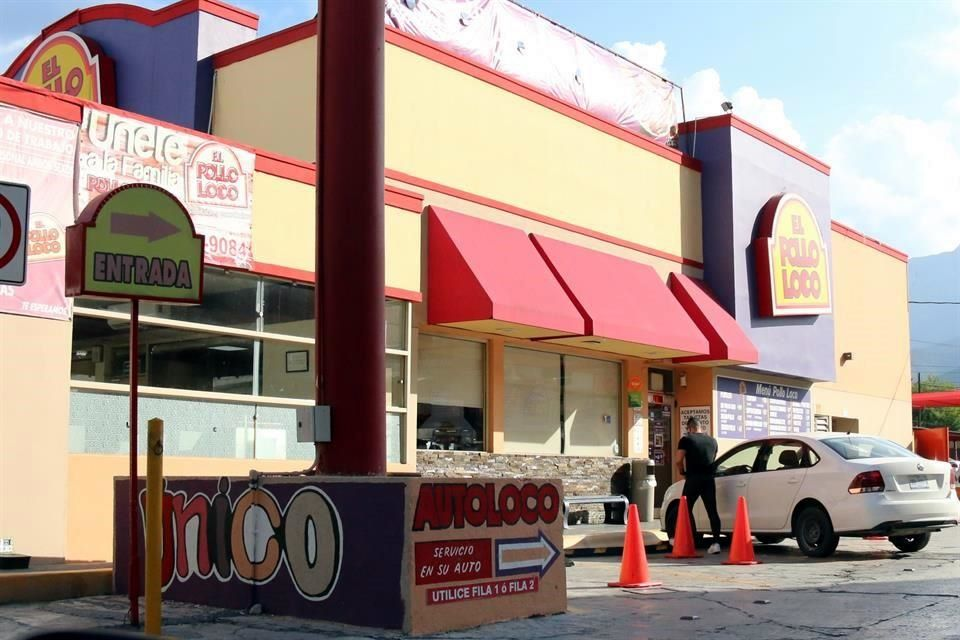
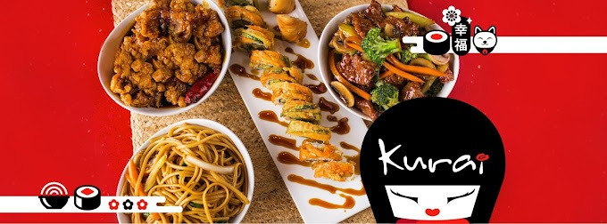
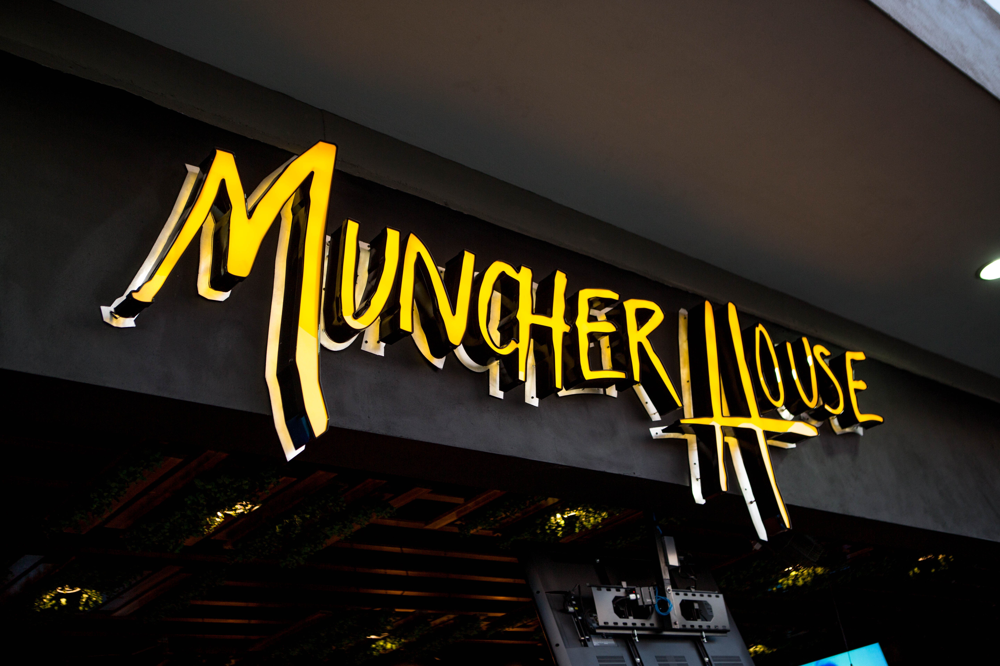

Tab 2
Tab 2

Pollo loco
Se come rico y barato!
El Pollo Loco es una franquicia de restaurantes de pollo asado mexicano de 400 sucursales en Estados Unidos y México fundada en Guasave, Sinaloa, México en 1975.

Kurai Sushi
Gran variedad de comida, pero el precio no tan razonable.
Kurai sushi es un restaurante buffet de sushi y comida oriental. Un lugar muy colorido y espacioso. Sus sucursales en Monterrey se encuentran en Avanta Gardens y Fashion Drive.

Muncher House
Un estandarte de la cocina regiomontana, un manjar para el paladar, pruebalo y disfruta de lo que es, el Norte del pais.
Tiene el sello Antojitos Monterrey.
Comida para el alma, techo para el corazón.
Muncher House es un restaurante que se especializa en hamburguesas de diferentes tipos e ingredientes, así como bebidas con o sin alcohol. Tiene cuatro sucursales en la zona metropolitana de Monterrey, Nuevo León, México.